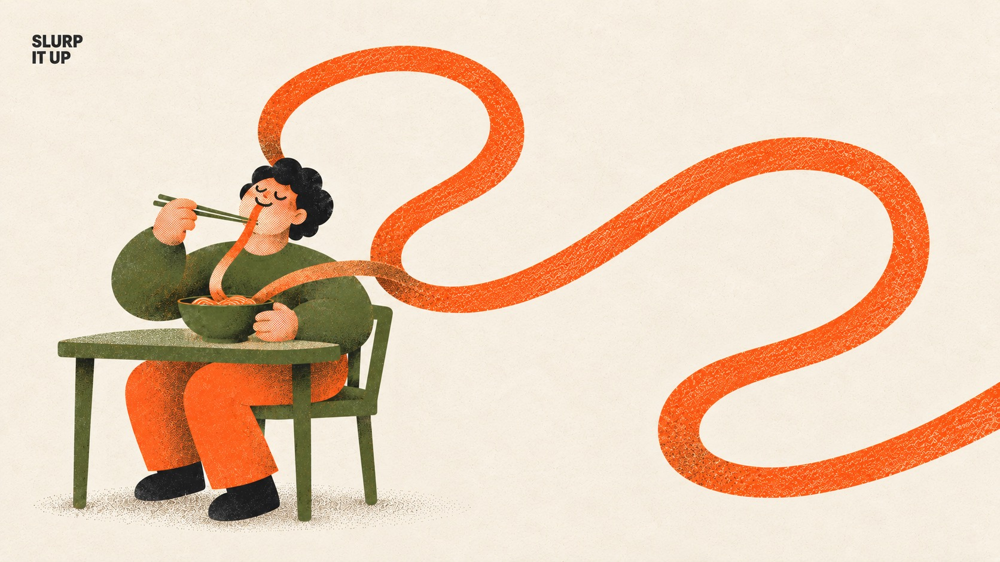
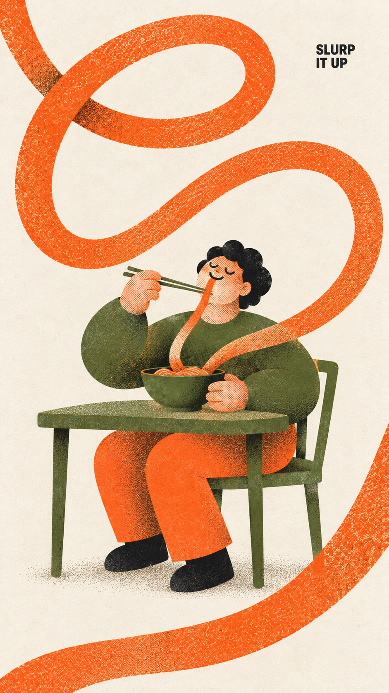
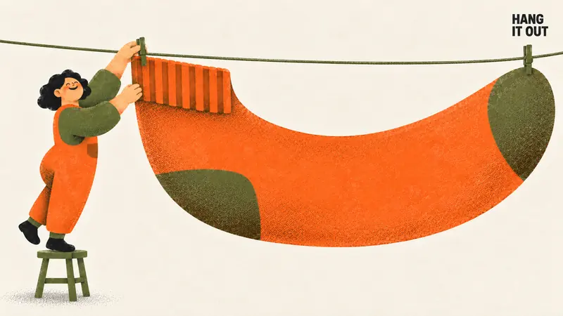
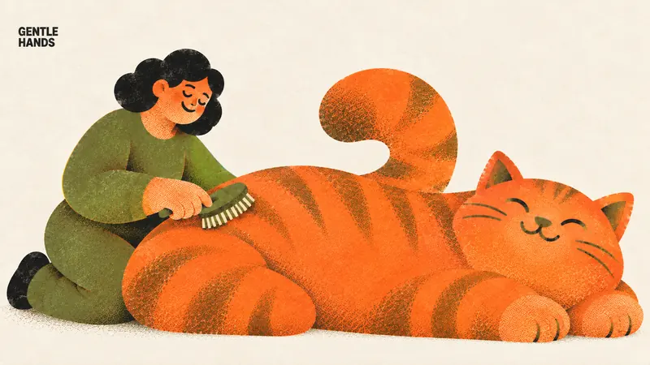
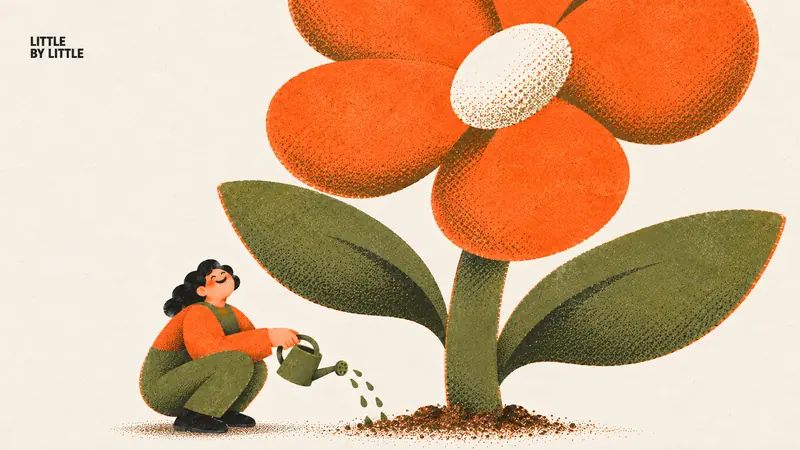

Type Posters · AI image style prompt
Everyday Riso
Three-ink risograph posters of one chunky rounded person doing a daily routine with exactly one absurdly oversized object, misregistration, halftone grain and a tiny corner label.


4 example cases
Same style.json, different subjects. Each case's values are in the examples section of the JSON.



What this style does
Warm, cute everyday-life risograph posters: one chunky rounded person does an ordinary daily action while exactly one object is absurdly oversized. Printed in three inks only (warm orange, olive green, near-black details) on cream paper, with visible misregistration, ink grain, coarse halftone shading and brown orange-over-olive overprint, plus one tiny black corner label.
Signature traits
- Strict three-ink risograph on cream paper #F4EBDD: warm orange #FF6C2F and olive green #5E6B3A as broad masses, near-black #1E1E1E only for hair, tiny eyes, the label and shoes. Brown appears only where orange overprints olive.
- The print must look physically printed: 1–3 px misregistration between ink layers, fine grain with patchy uneven coverage, coarse halftone or stipple dots for every shade, translucent overprint. No smooth digital gradient, airbrush, 3D or glow.
- One ordinary person with the series character build: rounded blocky body, soft thick limbs, small head, big soft hands, skin as pale orange halftone, minimal face with closed curved eyes or tiny dots, small nose and a gentle smile.
- Exactly one everyday object is absurdly oversized; the person and all other props stay at normal series proportions. The action is a plain daily routine and the mood is relaxed, warm and funny.
- Exactly one tiny bold black sans-serif label of 2–3 uppercase words in a free top corner, about 1.7 percent of canvas height, in one or two lines; no headline and no other wording.
- Pose and direction vary per case (sit, stand on tiptoe, kneel, squat, walk, ride) so a set of four never repeats one posture.
style.json
{
"style_name": "Everyday Riso",
"style_slug": "everyday-riso",
"style_version": "1.0.0",
"style_summary": "Warm, cute everyday-life risograph posters: one chunky rounded person does an ordinary daily action while exactly one object is absurdly oversized. Printed in three inks only (warm orange, olive green, near-black details) on cream paper, with visible misregistration, ink grain, coarse halftone shading and brown orange-over-olive overprint, plus one tiny black corner label.",
"category": "Type Posters",
"environment_variables": {
"ASPECT_RATIO": "Output aspect ratio: 9:16 or 16:9.",
"STYLE_FIDELITY_ANCHORS": "Runtime injection of the prioritized CORE and FLEX anchors from this spec.",
"SOURCE_CONTENT_TO_AVOID": "Runtime injection of the source-specific exclusions from this spec.",
"SUBJECT": "The one ordinary person: hair, face, body build and expression within the rounded chunky character system.",
"SUBJECT_ACTION": "The everyday action and the readable physical contact between the person and the oversized object.",
"PRODUCT_OR_PROP": "The single absurdly oversized everyday object, its ink colors and what exactly is exaggerated.",
"LOCATION": "The everyday setting, reduced to the minimum needed to read the action.",
"BACKGROUND_ELEMENTS": "The few normal-scale supporting items and ground shadow; everything else stays open cream paper.",
"MAIN_TEXT": "The tiny corner label: a 2–3 word uppercase imperative or short phrase, exact spelling, no punctuation.",
"SECONDARY_TEXT": "Additional wording; this style uses none, so the value is normally \"none\".",
"ACCENT_SYMBOL": "Separator or decorative mark; this style uses none, so the value is normally \"none\".",
"WARDROBE_STYLE": "Clothing and shoes for the person, assigned only to orange, olive and black ink.",
"DESIGN_INTENTION": "Why the oversized object makes the everyday moment funny and warm, and how it shapes the poster.",
"RATIO_COMPOSITION": "Separate 9:16 and 16:9 composition plans; apply only the plan matching ASPECT_RATIO."
},
"style_fidelity_anchors": [
"[CORE] Strict three-ink risograph on cream paper #F4EBDD: warm orange #FF6C2F and olive green #5E6B3A as broad masses, near-black #1E1E1E only for hair, tiny eyes, the label and shoes. Brown appears only where orange overprints olive.",
"[CORE] The print must look physically printed: 1–3 px misregistration between ink layers, fine grain with patchy uneven coverage, coarse halftone or stipple dots for every shade, translucent overprint. No smooth digital gradient, airbrush, 3D or glow.",
"[CORE] One ordinary person with the series character build: rounded blocky body, soft thick limbs, small head, big soft hands, skin as pale orange halftone, minimal face with closed curved eyes or tiny dots, small nose and a gentle smile.",
"[CORE] Exactly one everyday object is absurdly oversized; the person and all other props stay at normal series proportions. The action is a plain daily routine and the mood is relaxed, warm and funny.",
"[CORE] Exactly one tiny bold black sans-serif label of 2–3 uppercase words in a free top corner, about 1.7 percent of canvas height, in one or two lines; no headline and no other wording.",
"[FLEX] Pose and direction vary per case (sit, stand on tiptoe, kneel, squat, walk, ride) so a set of four never repeats one posture.",
"[FLEX] The oversized object may bleed off one or two edges; its placement, crop and which corner holds the label are recomposed for each ratio.",
"[FLEX] Which garments and props take orange versus olive can change per case, as long as the three-ink limit and overprint brown are respected.",
"[FLEX] Supporting props (chair, stool, clothesline, bowl, basket, watering can) and a soft stipple ground shadow are allowed when they explain the action; settings otherwise stay open cream paper."
],
"source_content_to_avoid": [
"The previous Chromatic Gesture Characters palette: hot pink, coral-pink skin, cobalt blue, emerald and any other color outside orange, olive, near-black and overprint brown.",
"The previous series' smooth airbrush or spray-gradient shading and soft digital glow.",
"Subjects, props, captions and poses copied from the earlier reference posters of the sibling series.",
"Surreal, dreamlike or abstract concept themes such as a body turning into landscape, which the brief identifies as underperforming.",
"Any watermark, social handle, creator ID, platform logo, brand logo, QR code or signature."
],
"visual_deconstruction": {
"reference_observation": "The source set is eight 9:16 risograph posters on warm cream paper. Each shows one rounded, small-headed person in orange and olive clothing doing a daily task — slurping noodles, hanging laundry, brushing a cat, watering a flower, carrying a box, hugging a coffee cup, licking ice cream, cycling — while one object is blown up far beyond real scale. Shading is coarse halftone and grain, inks overprint to brown, and a tiny two-line black label sits in a top corner.",
"style_content_separation": "Reusable: the three-ink riso system, print texture, chunky character build, single-object exaggeration formula, open cream space and the tiny corner label. Case-specific: the particular action, the oversized object, the label wording and each scene's placement.",
"creative_scope": "Formula-driven reinterpretation: any ordinary daily action plus exactly one absurdly oversized object, rendered in the fixed character and ink system. The reader should be able to say 'a person is ___, but the ___ is absurdly huge' within three seconds.",
"hierarchy": "The oversized object reads first as the largest ink mass, the person's face and contact point second, open cream space third, and the tiny label last."
},
"composition": {
"canvas": "Edge-to-edge cream paper poster with no frame, mockup, border or panel division.",
"subject_scale": "Person plus oversized object occupy about 60–80 percent of the canvas; the rest is calm cream negative space.",
"exaggeration_rule": "Only one object is enlarged. Its contact with the person (lips, hands, brush, clothespin, watering-can drops, basket) must stay visible and readable.",
"cropping": "The oversized object may be cropped by one or two canvas edges for tension; the person's face, hands and action are never cropped.",
"ratio_strategy": "Portrait uses the height for the object to tower, hang or loop vertically. Landscape re-composes the same case across the width — the object sweeps, stretches or lies laterally — instead of cropping or padding the portrait.",
"pose_variety": "Within a set of four, vary the action direction: sitting, standing, kneeling, squatting, walking or riding."
},
"typography": {
"label": "Exactly one label: bold black grotesk sans-serif, uppercase, 2–3 words, set in one or two flush-left lines.",
"size": "Tiny: cap height about 1.7 percent of canvas height, block no wider than 25 percent of canvas width.",
"placement": "A free top-left or top-right corner with clear margin, never touching or overlapping the subject or the oversized object.",
"wording": "Render MAIN_TEXT exactly once with no added punctuation. No headline, subtitle, secondary text, accent symbol, signature or brand."
},
"color_palette": {
"paper": "#F4EBDD warm cream, fibrous, visible as the background and as cutout highlights.",
"inks": [
"#FF6C2F warm orange — primary ink for broad masses: oversized objects, garments, skin halftone.",
"#5E6B3A olive green — secondary ink for garments, furniture, plants, stems and contours.",
"#1E1E1E near-black — detail ink only for hair, tiny eyes, the label and shoes."
],
"overprint": "Deep brown appears only where translucent orange prints over olive; it is used for stripes, tape, coffee, soil and shadows.",
"forbidden": "No pink, magenta, cobalt or any blue, purple, yellow, white ink or gray wash; no fifth ink.",
"flexibility": "The ink roles are fixed; how much orange versus olive each case uses can change."
},
"image_treatment": {
"medium": "Flat, chunky character illustration printed as a three-color risograph.",
"texture": "Visible 1–3 px registration offset leaving thin paper or overprint edges, fine ink grain, mild patchy uneven coverage, matte ink on fibrous cream paper.",
"shading": "Coarse halftone dots and stipple only; soft stipple ground shadows under feet, chairs and objects. No smooth tonal gradients.",
"character_rendering": "Rounded simplified silhouettes without outlines; skin is pale orange halftone over cream; facial features use olive or brown overprint with tiny black eyes."
},
"design_rules": [
"Pass the three-second test: a person is doing an everyday action, but one object is absurdly huge.",
"Enlarge exactly one object and keep the person, hands and every other item at normal series proportions.",
"Use only orange, olive and near-black ink on cream paper, with brown only as orange-over-olive overprint.",
"Make the riso print texture obvious at full view: misregistration, grain, halftone and overprint.",
"Keep the label tiny, black and in a free top corner, and render no other text.",
"Compose each ratio separately; the 16:9 version re-plans the scene across the width instead of cropping the portrait."
],
"do": [
"Choose ordinary daily routines: eating, laundry, pet care, gardening, moving, coffee, treats, cycling.",
"Give the person a relaxed, happy face with closed curved eyes or tiny dot eyes and a gentle smile.",
"Let the oversized object bleed off an edge when it adds tension.",
"Leave generous calm cream negative space.",
"Vary poses across a set of four so the series reads as a family, not a template."
],
"avoid": [
"Pink, cobalt or any blue, purple, yellow or extra fifth color.",
"Smooth airbrush gradients, glossy highlights, 3D rendering, glow or photorealistic lighting.",
"Surreal, dreamlike or abstract concepts, or more than one oversized element, giant heads or gigantic hands.",
"Tense, cool or serious expressions and fashion poses.",
"Large headlines, extra wording, logos, watermarks or handles.",
"Busy backgrounds, scenery or multiple people."
],
"prompt_template": "Use case: stylized-concept. Create ONE finished {ASPECT_RATIO} risograph illustration poster, warm cute everyday life. If the ratio is 9:16, compose a vertical scene; if it is 16:9, compose a genuinely horizontal landscape scene, never a crop, letterbox or padded portrait.\n\nPRIORITIZED STYLE:\n{STYLE_FIDELITY_ANCHORS}\n\nPRINT: strict THREE INKS on cream paper #F4EBDD: warm orange #FF6C2F, olive green #5E6B3A, near-black #1E1E1E. No fifth ink: brown is ONLY translucent orange-over-olive overprint. Skin is pale orange halftone over cream, not pink/peach paint. Black ink confined to compact hair, tiny eyes, tiny label and shoes; mouths/noses/object contours use olive or brown overprint. Orange and olive form broad masses. No blue, cobalt, pink, purple, yellow, white ink or gray wash.\nRisograph printing MUST be visually evident: slight 1–3 pixel registration offset at 1500px short edge leaves thin paper/overprint edges, fine ink grain with mild patchy coverage, visibly coarse halftone dot shading rather than smooth tonal gradients, semi-transparent overprint at orange/olive overlaps yielding brown. Matte real ink on warm cream fibrous paper. Preserve rounded series silhouettes but replace all prior smooth airbrush with dot/stipple shading. No 3D, glossy light, digital smooth gradient, glow or photorealism.\n\nCHARACTER: one ordinary person. {SUBJECT} Retain rounded blocky body, soft thick limbs, small head and softly broad hands; minimal face. Wardrobe: {WARDROBE_STYLE}\nACTION: {SUBJECT_ACTION}\nTHE ONE OVERSIZED OBJECT: {PRODUCT_OR_PROP} Keep exaggeration ONLY on this single object, with the ordinary human and every other item at the series proportions.\nSETTING: {LOCATION} Background: {BACKGROUND_ELEMENTS}\nDESIGN INTENTION: {DESIGN_INTENTION}\nRATIO PLAN: {RATIO_COMPOSITION} Apply only the plan for {ASPECT_RATIO}.\n\nCOMPOSITION: single scene, combined subject occupies 60–80 percent of image, substantial calm cream negative space. May crop the ONE giant object at edge; keep action, face and contact readable. Relaxed closed curved eyes or simple tiny black eyes, small nose and gentle smile. No surreal transformation, autonomous objects, abstract conceptual props, tension or cool fashion pose. One person only. No additional giant item, giant head, gigantic hand or extra limbs.\nTEXT: exactly \"{MAIN_TEXT}\" once, no added punctuation, in one or two lines of TINY bold black sans serif in free upper corner, about 1.7 percent of canvas height, block no more than 25 percent canvas width; keep quiet, clear and separate from subject. No other wording, marks or brand. Secondary text: {SECONDARY_TEXT}. Accent symbol: {ACCENT_SYMBOL}. When either value is \"none\", render nothing for it.\n\nSOURCE CONTENT TO REPLACE:\n{SOURCE_CONTENT_TO_AVOID}\n\nGenerate at highest available resolution, ideally 4K; preserve print dots, misregistration, grain and intentionally uneven ink. No denoising or sharpening.",
"negative_prompt": "pink, magenta, coral-pink skin, blue, cobalt, purple, yellow ink, white ink, gray wash, fifth ink color, smooth airbrush or spray gradient, digital flat fill without grain, 3D render, glossy highlights, glow, realistic lighting, photorealism, surreal transformation, dreamscape, body becoming landscape, more than one oversized object, giant head, gigantic hands, extra limbs, extra fingers, second person, tense or cool expression, large headline, extra words, misspelled label, punctuation in label, logo, watermark, social handle, QR code, signature, border, mockup frame, busy background, contact sheet",
"examples": [
{
"case_name": "slurp-it-up",
"values": {
"SUBJECT": "One cheerful adult with short curly black hair, small head, rounded blocky torso, soft thick limbs and big soft pale-orange halftone hands, eyes gently closed in bliss.",
"SUBJECT_ACTION": "Sits on an olive chair at a small table, holding ordinary olive chopsticks by the mouth and slurping the noodle, whose continuous end visibly reaches the lips.",
"PRODUCT_OR_PROP": "ONE absurdly long solid-orange noodle of normal thin width that rises from a normal olive bowl and travels in broad smooth loops across the frame and off an edge; only its length is exaggerated.",
"LOCATION": "A quiet kitchen corner reduced to one small olive table and one olive chair on open cream paper.",
"BACKGROUND_ELEMENTS": "Open cream paper with only a soft olive-brown stipple floor shadow under the chair; no walls, windows or extra props.",
"MAIN_TEXT": "SLURP IT UP",
"SECONDARY_TEXT": "none",
"ACCENT_SYMBOL": "none",
"WARDROBE_STYLE": "Olive long-sleeve sweater, loose orange trousers and black shoes.",
"DESIGN_INTENTION": "The noodle becomes the poster's single graphic line: one continuous orange ribbon linking the mouth to the canvas edge, turning a small daily slurp into a sweeping gesture.",
"RATIO_COMPOSITION": "For 9:16: person and table sit in the lower-middle; the noodle loops in tall S-curves through the upper two-thirds and exits the top and bottom-left edges; label in the top-right corner. For 16:9: person, chair and table occupy the left-center third in the lower half; the noodle sweeps out in broad lateral loops across the middle and right and exits the right edge; label in the top-left corner."
}
},
{
"case_name": "hang-it-out",
"values": {
"SUBJECT": "One smiling adult with shoulder-length curly black hair, small head, rounded body, soft thick limbs and big soft hands.",
"SUBJECT_ACTION": "Stands on tiptoe on a small olive stool, reaching up with both hands to pin the sock cuff to the line with one ordinary olive clothespin.",
"PRODUCT_OR_PROP": "ONE enormous orange sock with a ribbed cuff and olive heel and toe patches, longer and wider than the whole person; only the sock is oversized.",
"LOCATION": "An outdoor laundry line suggested by a single olive clothesline crossing open cream paper.",
"BACKGROUND_ELEMENTS": "One thin olive clothesline, ordinary olive clothespins and a small stipple shadow under the stool; no other laundry, sky or buildings.",
"MAIN_TEXT": "HANG IT OUT",
"SECONDARY_TEXT": "none",
"ACCENT_SYMBOL": "none",
"WARDROBE_STYLE": "Orange dungarees with a small brown-overprint pocket over an olive long-sleeve top, olive socks and black shoes.",
"DESIGN_INTENTION": "The contrast between a tiny clothespin and a giant sock makes an ordinary chore comic; the clothesline gives a clean horizontal structure for the joke.",
"RATIO_COMPOSITION": "For 9:16: the clothesline crosses the upper area, the person stands on the stool at the left, and the sock hangs vertically down the right side to near the bottom edge; label in the top-left corner. For 16:9: the clothesline runs edge to edge in the upper third; the person on the stool at far left clips the cuff while the sock, pinned at cuff and toe, stretches along the line across two-thirds of the width with its foot sagging in a soft curve; label in the top-right corner above the line."
}
},
{
"case_name": "gentle-hands",
"values": {
"SUBJECT": "One serene adult with chin-length curly black hair, small head, rounded body and big soft pale-orange hands, eyes closed with a gentle smile.",
"SUBJECT_ACTION": "Kneels beside the cat and brushes along its back with a small ordinary olive grooming brush whose cream bristles touch the fur.",
"PRODUCT_OR_PROP": "ONE sofa-sized plump orange tabby cat with brown-overprint stripes, closed curved eyes, a smiling mouth, rounded paws and a curling tail; only the cat is oversized.",
"LOCATION": "A calm living-room floor implied only by the cat's resting shadow on cream paper.",
"BACKGROUND_ELEMENTS": "Open cream paper and a soft olive-brown stipple floor shadow; no sofa, furniture or other animals.",
"MAIN_TEXT": "GENTLE HANDS",
"SECONDARY_TEXT": "none",
"ACCENT_SYMBOL": "none",
"WARDROBE_STYLE": "Olive long-sleeve top, olive trousers and black shoes.",
"DESIGN_INTENTION": "The cat's huge orange mass carries the warmth of the image; the small brush and the person's tender lean make the gesture read as care, not effort.",
"RATIO_COMPOSITION": "For 9:16: the cat fills the lower and right two-thirds with its tail curling upward, and the person kneels at the upper-left behind its back; label in the top-right corner. For 16:9: the cat lies stretched lengthwise like a long loaf from left-center to the right edge, its smiling head at the right third and its tail curling over its back; the person kneels at the far left; label in the top-left corner."
}
},
{
"case_name": "little-by-little",
"values": {
"SUBJECT": "One happy adult with curly black hair, small head, rounded body and big soft hands, face tilted up with a wide smile.",
"SUBJECT_ACTION": "Squats low and tips a small ordinary olive watering can so a few olive drops fall onto the soil at the stem base.",
"PRODUCT_OR_PROP": "ONE huge single flower about three times the person's standing height: thick olive stem, two broad olive leaves and a giant orange five-petal blossom with a cream cutout center; only the flower is scaled up.",
"LOCATION": "A garden patch reduced to one mound of brown-overprint soil on cream paper.",
"BACKGROUND_ELEMENTS": "Cream paper, a small stipple soil mound and a soft ground shadow; no fence, pots or other plants.",
"MAIN_TEXT": "LITTLE BY LITTLE",
"SECONDARY_TEXT": "none",
"ACCENT_SYMBOL": "none",
"WARDROBE_STYLE": "Orange long-sleeve top under olive dungarees, black shoes.",
"DESIGN_INTENTION": "A small patient act faces a towering result: the low squat and the high blossom stretch the canvas between effort and growth.",
"RATIO_COMPOSITION": "For 9:16: the person squats at the lower-left; the stem rises along the right side and the blossom fills the upper frame, cropping at the top and right; label in the top-left corner. For 16:9: the person squats small at the lower-left; the stem stands at center-right with the blossom cropping at the top edge while the two leaves spread wide sideways across the frame; label in the top-left corner."
}
}
]
}